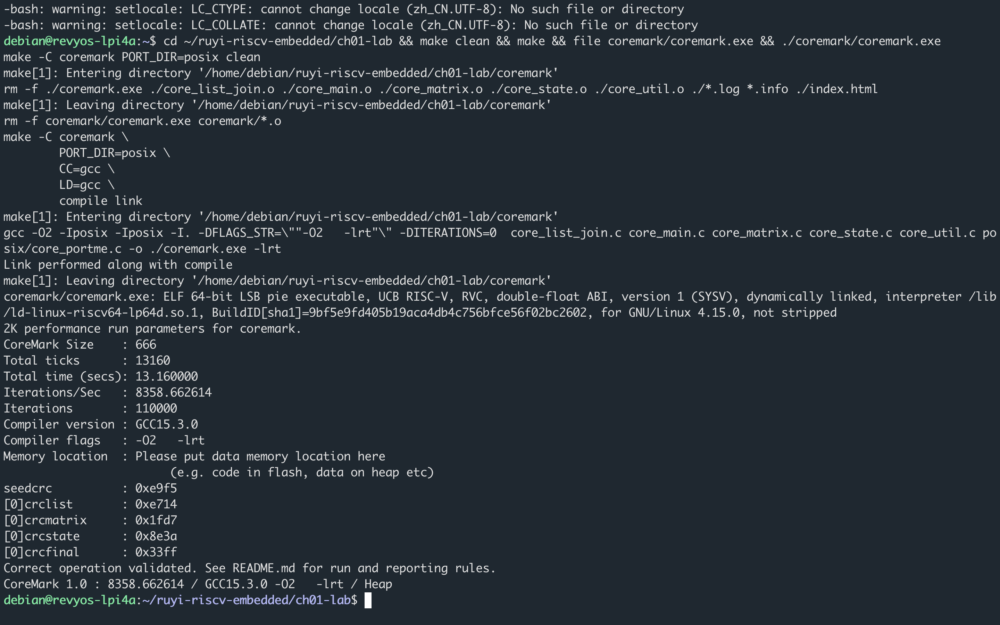

品牌落点 · 第一章 1.1
如意 SDK 从装上工具链开始
硬露出在 ch01 §1.1 荔枝派 4A 与 RuyiSDK。后面每章页眉只署工具链名。
入口
. ~/venv-gnu-ruyisdk/bin/ruyi-activate
三元组钉死
riscv64-ruyisdk-linux-gnu —— 为板上 Linux 用户态交叉编译。
验收
file 认 RISC-V，CoreMark 上板跑分。同一份源码也可在板上用本机 gcc 复跑。

品牌落点 · 第一章 1.1
硬露出在 ch01 §1.1 荔枝派 4A 与 RuyiSDK。后面每章页眉只署工具链名。
. ~/venv-gnu-ruyisdk/bin/ruyi-activate
riscv64-ruyisdk-linux-gnu —— 为板上 Linux 用户态交叉编译。
file 认 RISC-V，CoreMark 上板跑分。同一份源码也可在板上用本机 gcc 复跑。
